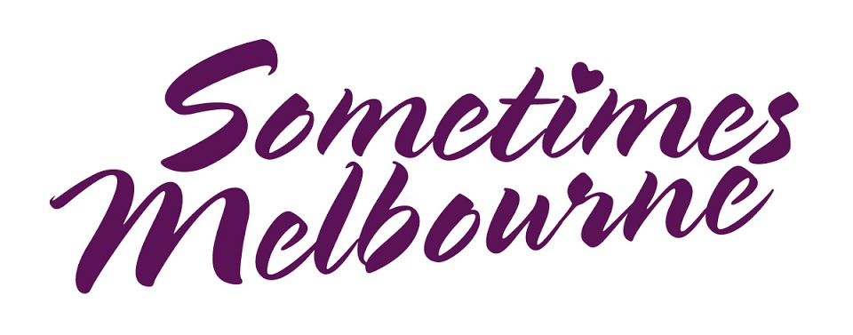

Sometimes Melbourne: Reviews and writing about theatre
Independent theatre in Melbourne is glorious. As are all the companies, creatives, artists, producers and techies who make it. Indie theatre has always been supported by indie media – writers and commentators whose lives are filled with theatre. Indie media voices celebrate, analyse and share.
Recent reviews
Capturing the energy that makes poetry come alive when it’s read, Little Monster shows how heart-hugging theatre and art can be made even when the demons seem too huge.
It’s about wanting to be accepted into that secret club which everyone else seems to be part of, so that your life can make sense and the inexplicable hurt can stop.